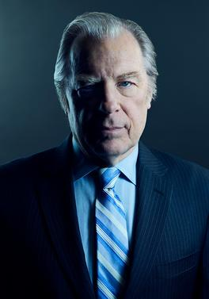

Chuck McGill es el hermano mayor de Jimmy McGill, un abogado con un prestigio respetable y una mente legal afilada, al mismo tiempo se lo ve atormentado por una enfermedad mental conocida como "electrosensibilidad". La relación entre Chuck y su hermano Jimmy es fundamental en la serie, que se caracteriza por una mezcla de amor, rivalidad y resentimiento.